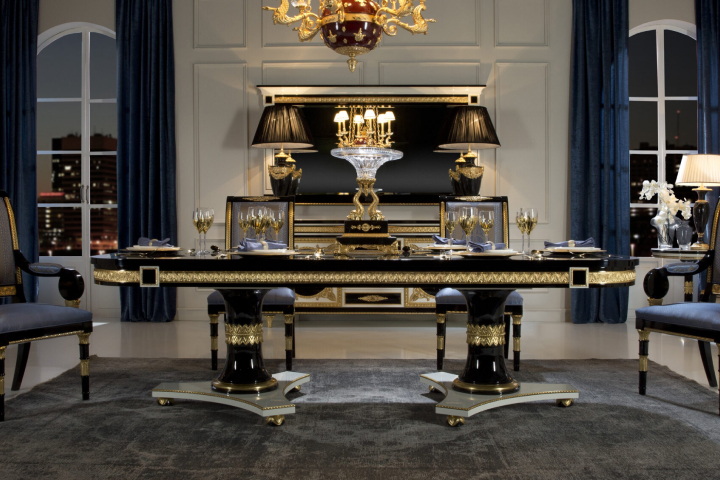

“Xu hướng thiết kế nội thất” có thể giống như một thuật ngữ nghịch lý. Trang trí nội thất không có xu hướng thay đổi theo mùa hoặc mốt nhất thời — đồ nội thất, hàng dệt may, tác phẩm nghệ thuật và tấm phủ tường quá cồng kềnh, quá đắt, quá bền để cập nhật thường xuyên. Khi bạn thiết kế một căn phòng, như người ta thường nói, bạn cần học cách chung sống với nó. Trong một khoảng thời gian dài.
Tuy nhiên, con lắc vẫn dao động, mặc dù qua nhiều năm và nhiều thập kỷ: chủ nghĩa phóng túng trải thảm lông xù của thập niên 1970 nhường chỗ cho sự dư thừa hào nhoáng của thập niên 1980, nhường chỗ cho chủ nghĩa tối giản thanh lọc khẩu vị của thập niên 1990. Vì vậy, khi chúng ta bước vào năm 2023—và việc tìm kiếm các giải pháp nội tại phù hợp với cả sự tỉnh táo của chúng ta và hành tinh trở nên quan trọng hơn bao giờ hết—cảm giác về sự trường tồn là chìa khóa để hiểu được những năm 2020 đang đi theo hướng nào. Điều gì sẽ tạo cảm giác vượt thời gian hoặc đáng tin cậy trong vài năm tới, và điều gì đang trên đường dẫn đến cảm giác lỗi thời?
Dưới đây là những xu hướng thiết kế nội thất hàng đầu cần biết vào 2023, cũng như những xu hướng sắp ra mắt.
PHONG CÁCH TÂN CỔ ĐIỂN - (NEO CLASSIC)
“Sự trở lại của chủ nghĩa tân cổ điển, tập trung vào các đường nét đối xứng và chi tiết, là một bước tiến tự nhiên sau sự phổ biến của phong cách hiện đại giữa thế kỷ. Phong cách trang trí dễ dàng kết hợp với các thời kỳ và phong cách khác, đồng thời tập trung vào sự sang trọng và tinh tế, mà không phải là sự phô trương của sự giàu có.” - Timothy Corrigan
PHONG CÁCH TÂN CỔ ĐIỂN - (NEO CLASSIC)
“Sự trở lại của chủ nghĩa tân cổ điển, tập trung vào các đường nét đối xứng và chi tiết, là một bước tiến tự nhiên sau sự phổ biến của phong cách hiện đại giữa thế kỷ. Phong cách trang trí dễ dàng kết hợp với các thời kỳ và phong cách khác, đồng thời tập trung vào sự sang trọng và tinh tế, mà không phải là sự phô trương của sự giàu có.” - Timothy Corrigan
PHONG CÁCH TÂN CỔ ĐIỂN - (NEO CLASSIC)
“Sự trở lại của chủ nghĩa tân cổ điển, tập trung vào các đường nét đối xứng và chi tiết, là một bước tiến tự nhiên sau sự phổ biến của phong cách hiện đại giữa thế kỷ. Phong cách trang trí dễ dàng kết hợp với các thời kỳ và phong cách khác, đồng thời tập trung vào sự sang trọng và tinh tế, mà không phải là sự phô trương của sự giàu có.” - Timothy Corrigan